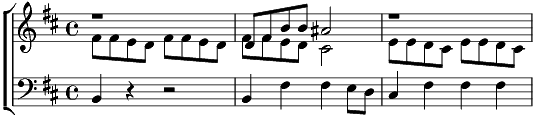

1. … Et un peu vagabond
Jamais ni patrie ni patron
Aux quatre vents
Mais dedans sa roulotte nous étions dix enfants
Et le soir autour d'un feu de camp
On rêvait d'une maison blanche en chantant
Refrain:
Qu'il est long qu'il est loin ton chemin papa chemin papa
C'est fatigant d'aller où tu vas
Qu'il est long qu'il est loin ton chemin papa chemin papa
Devrais t'arrêter dans ce coin t'arrêter dans ce coin
2. … Et dès le petit jour
Reprenait son voyage au long cours
Laver sa chemise
Et le voilà reparti pour une nouvelle terre promise
Et le soir autour d'un feu de camp
Elle rêvait d'une maisobn blanche en chantant
Refrain
3. … A travers les saisons
Regardant par dessus l'horizon
Nous a semés aux quatre coins du monde
Comme des grains de blé
Et quelque part au bout de l'univers
Roule encore la vieille roulotte de mon père
Refrain